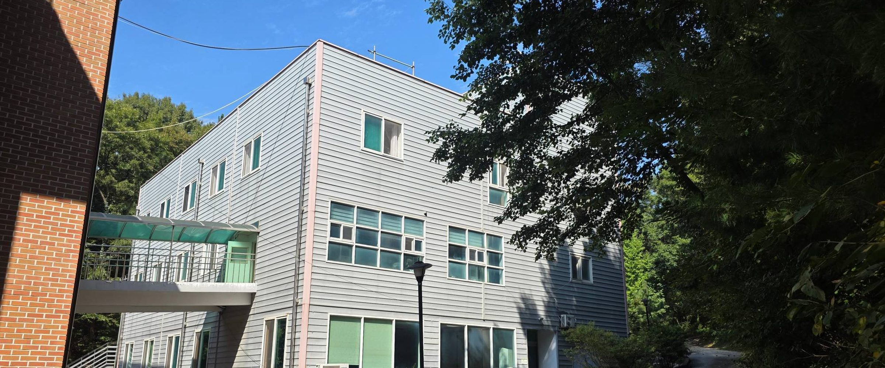
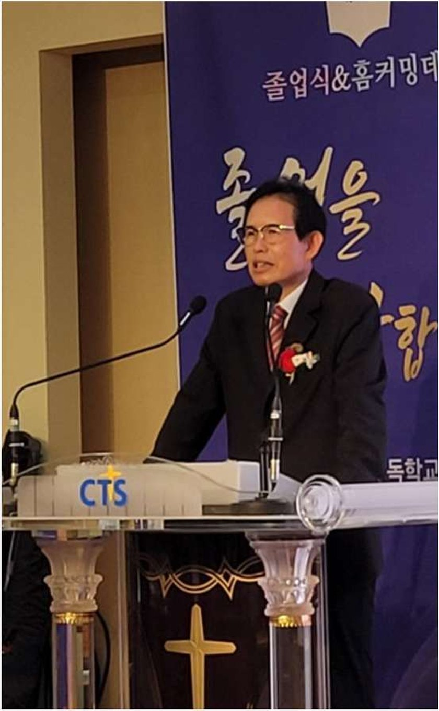

I.
우리는 오직 성경 66권만이 문자로 기록된 하나님의 계시임을 믿습니다.

학교소개

졸업식 · 홈커밍데이
김남주 폴앤다니엘기독학교 교장
For Christ, For All Nations
그리스도를 위하여, 모든 민족을 위하여
21세기 우리는 심각한 가치관의 혼돈 속에 살아가고 있습니다. 미래에 대한 불확신, 황금만능주의, 개인주의, 극단적 상대주의와 허무주의와 이기주의로 점철된 각종 오염된 가치관들이 여러 통로를 통하여 학교와 가정과 자녀들 마음 깊은 곳까지 스며들어와 자녀들을 지배해 가고 있습니다.
이러한 시대적 위기를 인식한 신앙지도자들은 기독학교를 설립하기 시작하였고, 폴앤다니엘기독학교는 이러한 국가적 · 시대적 기대와 성령의 인도하심에 따라 새로운 기독학교 모델로, 혼탁한 교육 상황에 신선한 샘물과 같은 기독교육 시스템을 제시하여, 성경적 가치관을 가지고 교육하기 위해 설립되었습니다.
폴앤다니엘기독학교는 영성과 공동체성과 지성을 훈련하고 교육합니다. 매일 하루 세 번의 성경공부와 기도와 예배를 통해 하나님을 만나고, 자기주도학습과 지도를 통해 지성을 키우며, 기숙사 훈련을 통해 자기보다 남을 생각하는 공동체성을 배웁니다.
학교소개
우리 공동체가 고백하는 신앙 10항 가운데 네 항을 옮깁니다.
I.
우리는 오직 성경 66권만이 문자로 기록된 하나님의 계시임을 믿습니다.
III.
우리는 성경이 하나님의 뜻을 분별하는 최종적 권위를 가지며, 어떤 단체의 해석이나 권위 있는 자의 설교라 할지라도 성경과 같거나 그보다 높은 권위를 가질 수 없음을 믿습니다.
VI.
우리는 성자 하나님 예수 그리스도께서 완전한 인간으로 오신 완전한 하나님이시며, 사망을 이기시고 부활 · 승천하사 심판주로 다시 오실 유일하신 메시야이심을 믿습니다.
VIII.
우리는 오직 예수 그리스도의 은혜로 구원받으며, 우리 안에 계신 성령께서 역사하셔서 그리스도의 성품을 닮아가게 하심을 믿습니다.
학교소개
“너희는 가서 모든 족속으로 제자를 삼아 아버지와 아들과 성령의 이름으로 세례를 주고, 내가 너희에게 분부한 모든 것을 가르쳐 지키게 하라.”
마태복음 28:19–20저희 학교의 교육 가치는 66권의 성경 말씀의 주제이신 예수 그리스도의 복음과 지상 명령입니다. 학생들이 이 세상에서 뛰어난 실력과 하나님에 대한 뜨거운 사랑을 겸비하여, 각자의 분야에서 어려운 이웃을 섬기는 기독교 지도자가 되도록 교육합니다.
또한 교사와 학생이 구분되지 않고 함께 훈련받는 공동체 훈련을 합니다. 이곳에서 교사와 학생은 그리스도 안에서 동일한 형제자매로서 각자의 위치에서 서로를 존중하고 섬기기에 힘씁니다.
학교소개
교과 · 기숙사 · 행정 · 자문으로 학교를 함께 섬기는 분들입니다. 「약력」 표시가 있는 분은 눌러서 보실 수 있습니다.
※ 약력은 본인 동의를 받은 선생님만 싣습니다. 이름을 누르면 펼쳐집니다.